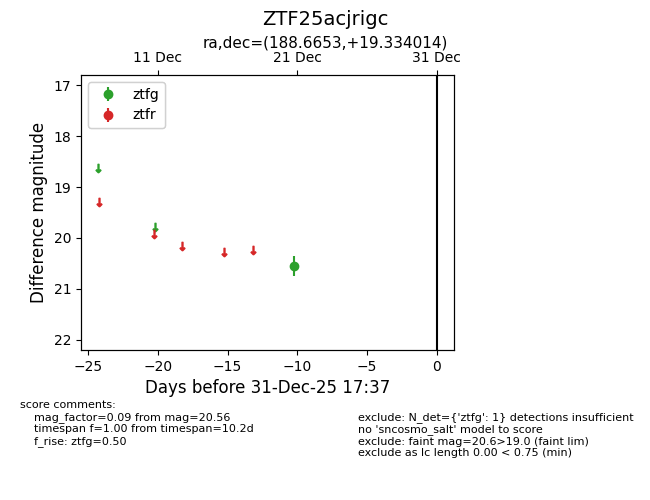
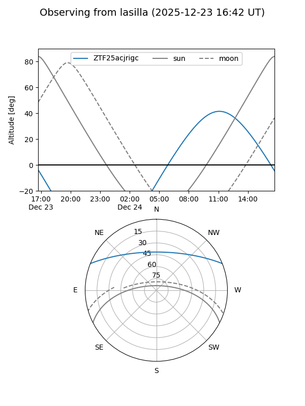
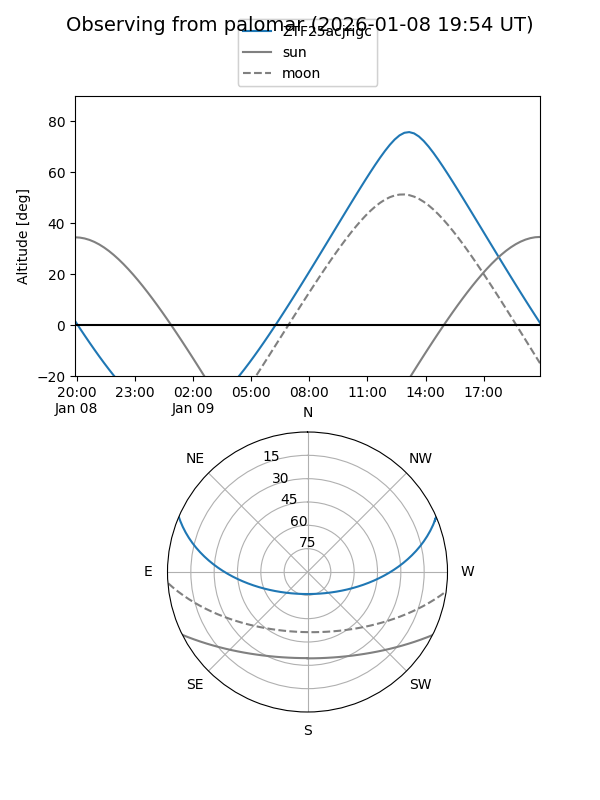

ZTF25acjrigc
Target ZTF25acjrigc at 2025-12-21 13:02
Aliases and brokers:
FINK: fink-portal.org/ZTF25acjrigc
Lasair: lasair-ztf.lsst.ac.uk/objects/ZTF25acjrigc
ALeRCE: alerce.online/object/ZTF25acjrigc
alt names
ZTF25acjrigc (ztf,fink_ztf)
Coordinates:
equatorial (ra, dec) = 188.6653,+19.33401
equatorial (HMS+DMS) = 12:34:39.67,+19:20:02.45
galactic (l, b) = (275.7632,+81.30703)
Flags:
Photometry:
last ztfg=20.56
1 ztfg detections
Lightcurve

Visibility


Additional plots